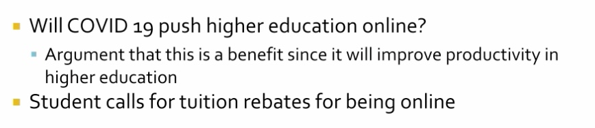

Marybeth Gasman: Are we ready to educate a diverse nation?
The landscape of higher education
- 2014, for the first time the nation's study body, K-12, was majority students of color
- 2019, almost half (45%) of the nation's college students are students of color
- 2050, census data predicts that the US will be majority people of color
Faculty
-
88% of faculty at 60 top research universities is White
-
76% of the nation's faculty overall is White
-
5% of faculty are Latinx compared to 20% of undergraduate population, 2% growth in 20 years
-
6% of faculty are black compared to 14% of undergraduate population, 1% growth in 20 years
-
11% of faculty are Asian compared to 7% of the undergraduate population
How teaching needs to change a diverse nation
- Assume success on the part of the students rather than seeing students of color from a deficit perspective.
- Faculty should believe in their students success (even sometimes more so than the student believes in themselves)
- Teach in ways that focus on what the students need to learn rather than what is convenient for the professor.
- Work together to co-construct classes and cirricula that empowers the students.
Changing teaching to educate a diverse nation
- Allow students to bring their full identities to the classroom and capitalize on all aspects of a student's identity in the learning process
- Give students the opportunity to participate in culturally relevant assignments that speak to the issues in the communities from which they come.
- Encourage students collaboration over competition.
The role today's students can play, consider becoming a professor, why?
- Opportunity to challenge and shape the minds of the next generation
- Chance to pursue your ideas
- Opportunity to have an impact on society with your research and teaching.
The role today's faculty can play
- Encourage your students to pursue the professoriate as a career.
- Introduce your students to research of various types.
- Share the various aspects of your faculty career with your students so they understand faculty life.
- Show enthusiasm for your teaching, research and career so that students understand the positive aspects of being a professor.
Eric Helland: Why are the prices so damn high?
Why?
- Lazy rivers and other waste?
- Administrative costs?
- Increases in quality?
Administrators
- The reason college tuition costs so much is "the constant expansion of university administration"
Bloat
Increase in quality?


Why should higher quality increase cost?
- What we teach has improved in quality (in some cases), but these kinds of improvements cannot explain increases in costs. It is no more expensive to teach new theories than old
- Why should quality increase cost?
If not bloat or quality then what?

It really looks like the story is the cost of faculty is the big driver in the rise of tuition.
Health care: note fastest increase in 60s and 70s
- Waste and administrative costs are plausible reasons why the US health care costs system is expensive but less so for why costs have grown over time.
- If growth in admin costs explain the growth in health care costs, then admin costs would have to grown by 8k%, even assuming that base health care costs had doubled. These numbers are not plausible.
The costs have been driven by the salaries

But why do wages increases lead to price increases in some industries but not others?

Relative productivity growth
Unique aspects of the Baumol Effect


